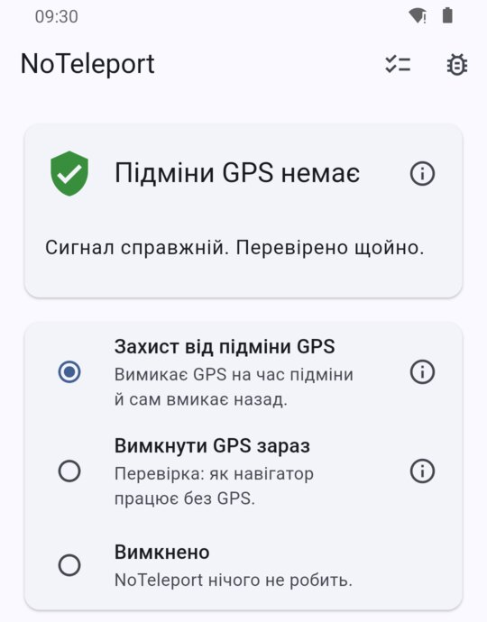
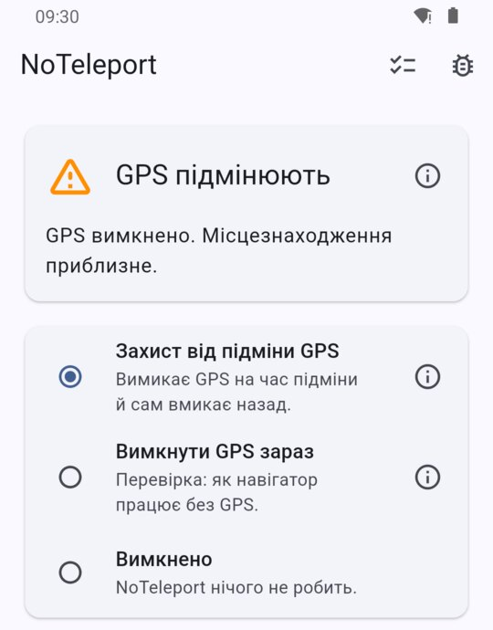

Щоб навігатор не «переносив» вас під час повітряної тривоги
NoTeleport — додаток для Android для жителів України. Він допомагає навігатору працювати під час повітряних тривог, коли сигнал GPS підмінюють.
Додаток ще готується до публікації: кнопка запрацює, щойно він з’явиться в Google Play.
- Нічого нікуди не надсилає. У додатка взагалі немає доступу до інтернету.
- Нічого про вас не збирає. Місцезнаходження обробляється лише на вашому телефоні.
- Без реклами й аналітики. У додатку немає рекламних і сторонніх модулів, які щось про вас дізнаються.
- Без реєстрації. Не потрібні ні обліковий запис, ні номер телефону.
Докладно про це — у політиці конфіденційності.
Яку проблему він розв’язує
Під час повітряної тривоги сигнал GPS часто підмінюють. Навігатор раптом показує, що ви в іншому місті чи навіть в іншій країні, за сотні кілометрів від справжнього місця. Маршрут зникає, і користуватися навігатором неможливо, доки підміна не закінчиться.
Що робить NoTeleport
- Перевіряє сигнал GPS на телефоні.
- Щойно помічає підміну, вимикає GPS — одразу для всіх додатків.
- Телефон далі визначає, де ви, за Wi-Fi та мобільними мережами. Це менш точно, ніж GPS, зате навігатор показує вас там, де ви справді є.
- Коли підміна закінчується, NoTeleport сам вмикає GPS.
Поки підміни немає, додаток нічого на телефоні не змінює, тож його можна тримати ввімкненим постійно.


Що варто знати заздалегідь
- Точності GPS додаток не повертає. Поки GPS вимкнено, місцезнаходження приблизне: у місті зазвичай з точністю до кількох десятків метрів, за містом гірше. Зате вас не «переносить» в інше місто.
- Перші секунди підміни. На самому початку підміни навігатор може на кілька секунд показати підроблене місце: стільки потрібно, щоб її розпізнати. Потім він повертається.
- Розрахований на Україну. Підміну він розпізнає за двома ознаками: координати опинилися за межами України або раптово «перестрибнули» на неможливу відстань.
- Навігатори. Перевірено з Google Картами, Waze та OsmAnd. У Waze під час підміни можливі короткі стрибки.
- Телефон. Потрібен Android 8 або новіший із сервісами Google.
- Налаштування. Один раз треба пройти кілька кроків у налаштуваннях телефона; це займає кілька хвилин. Покрокова інструкція з картинками.
Як встановити
Після встановлення пройдіть налаштування: це кілька хвилин.
Хто це робить і куди писати
Автор додатка: профіль у LinkedIn.
Додаток новий. Якщо щось працює не так або незрозуміло, напишіть: github.com/noteleport/noteleport.github.io/issues. Це допоможе зробити його кращим.